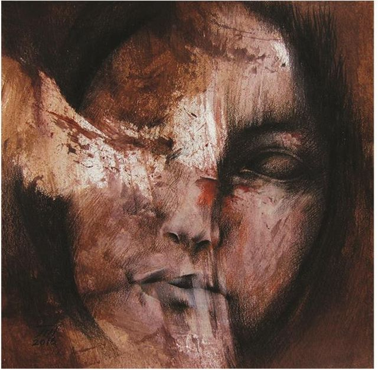
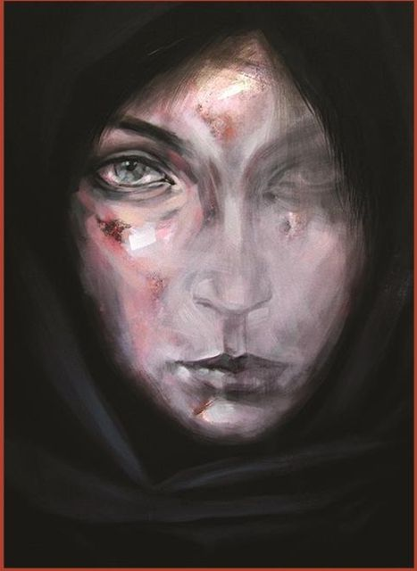
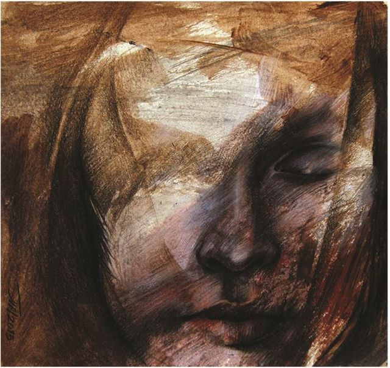
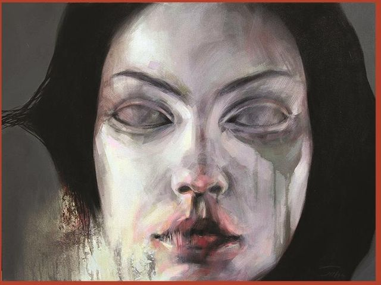
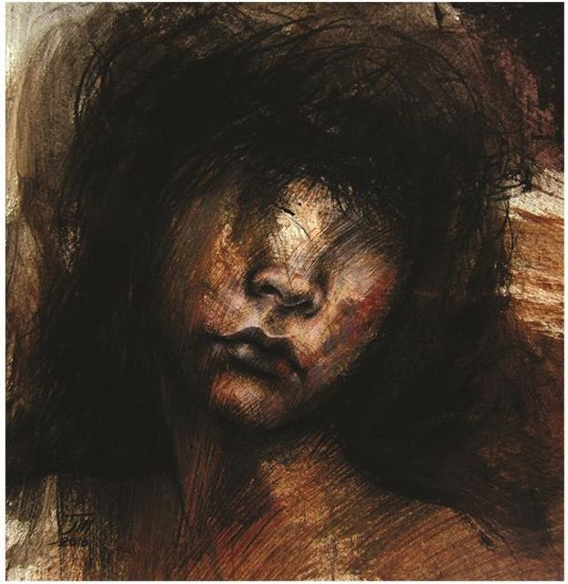
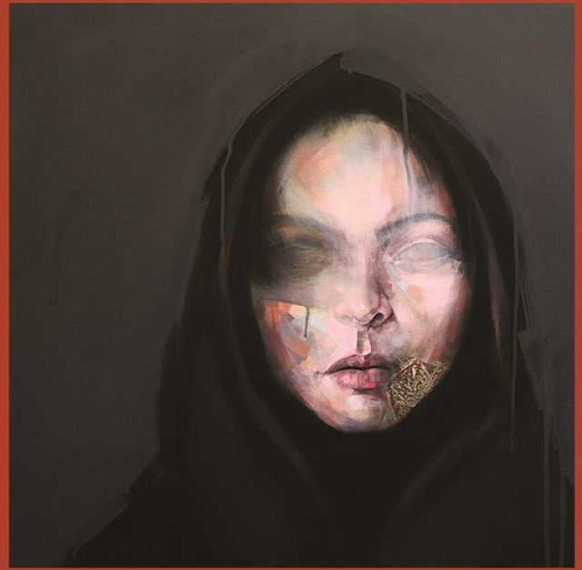
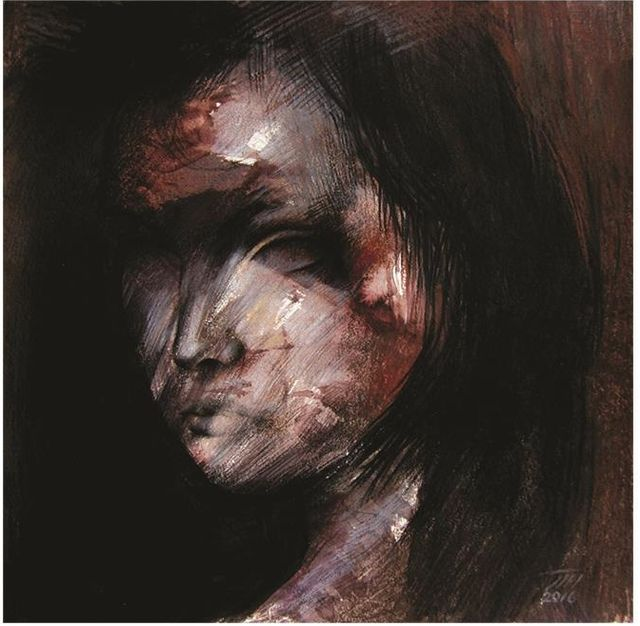
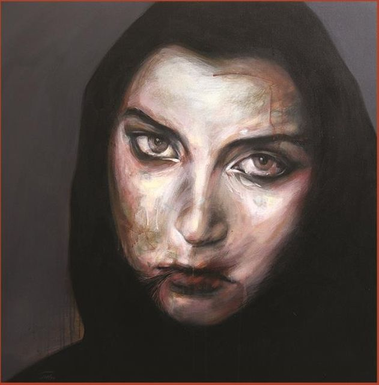

StatementAbout the work
These pieces are about women, whom through history have always been attacked on the basis of conditions prevailing in society. The women in my paintings, vulnerable to such assaults, are married by this violence. But these scars are deeper than the skin. Darkness, through this mutilation, corrupts the their clarity and purity, decaying the spirit and body. Their souls are destroyed, gradually melting — they can neither see, nor be seen. Speaking, becomes punishing. Uncaring, we remained silent. Words catch in our throat, even when faced with their visages. We see our own inadequacy, and the results of our inaction. Their faces protest, their silence speaks. Suddenly, we realize we are a part of this tragedy. We feel this pain, this objection, this gross injustice. For, they want to be seen and to be heard — that is the essence to being.
Works10 artworks


















History of experienceBiography · education · exhibitions · awards
Education
- 2009M.A. Painting, Shahed University|Tehran – Iran
- 2005B.A. Painting, Sistan & Baluchistan University|Zahedan – Iran
- —Iranian Society of Painters
Solo exhibitions
- 2015Behesht Art Gallery|Kerman – Iran
- 2014Behesht Art Gallery|Kerman – Iran
- 2014Homehr Art Gallery|Kerman – Iran
- 2007Bootia Art Gallery|Kerman – Iran
Selected group exhibitions
- 2016The St. Augustine Art Association|Florida-USA
- 2016Agusta Savage Gallery|Massachusetts-USA
- 2015Satura Art Gallery|Genova-Italy
- 2015Aria Art Gallery|Tehran – Iran
- 2015Artists House|Tehran – Iran
- 2014Artists House|Tehran – Iran
- 2013Artists House|Tehran – Iran
- 2013Aria gallery|Tehran – Iran
- 2012Artists House|Tehran – Iran
- 2008Saba Cultural Center|Tehran – Iran
- 2008Khavaran Academy|Tehran – Iran
- 2008Boys School of Fine Arts|Tehran – Iran
- 2001Bahman Academy|Tehran – Iran
Awards
- 2016Winner of Prize 25N Gallery Online|New York-USA
- 2016Winner of 6th Annual "Figurative" Online Art Competition|Florida-USA
- 2015Selected in the 5th Anniversary Issue of Artist Portfolio Magazine|California- USA
- 2012Winner of visual Arts, "Professor Ali Akbar Sanai's Commemoration"|Kerman – Iran
- 2007Winner of Painting Workshop, "Chehel Negareh-e Sorkh", Khavaran Academy|Tehran – Iran
Source: the Sobhan Gallery artist catalogue “Sobhan Gallery. C. Amin Rostamizadeh.pdf”.